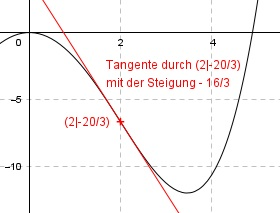

Aufgabe 94 Der Graph einer achsensymmetrischen ganzrationalen Funktion 4. Grades hat in (2|- 20/3) einen Wendepunkt mit einer Steigung von -16/3. Wie lautet seine Funktionsgleichung?  Allgemeine Form einer achsensymmetrischen ganzrationalen Funktion 4. Grades: f(x) = ax4 + cx2 + e f’(x) = 4ax3 + 2cx f’’(x) = 12ax2 + 2c 3 Bedingungen: 1. Hat in (2|- 20/3) einen Wendepunkt bedeutet zum einen: f(2) = -20/3 --> a * 24 + c * 22 + e = -20/3 --> 16a + 4c + e = -20/3 I 2. Hat in (2|-20/3) einen Wendepunkt bedeutet zum anderen: f’’(2) = 0 --> 12a * 22 + 2c = 0 --> 48a + 2c = 0 II 3. Hat in (2|- 20/3) einen Wendepunkt mit der Steigung -16/3 bedeutet: f’(2) = -16/3 --> 4a * 23 + 2c * 2 = - 16/3 --> 32a + 4c = - 16/3 III II * (-2) + III -96a - 4c = 0 32a + 4c = -16/3 ------------------ -64a = -16/3 |:(-64) 16 1 a = --------- = ---- 3 * 64 12 a = 1/12 in II eingesetzt: 48 * (1/12) + 2c = 0 4 + 2c = 0 |-4 2c = -4 |:2 c = -2 a = (1/12) und c = -2 in I eingesetzt: 16 * (1/12) + 4 * (-2) + e = -20/3 4/3 - 8 + e = -20/3 4/3 - 24/3 + e = -20/3 -20/3 + e = -20/3 |+20/3 e = 0 Gesuchte Funktionsgleichung: f(x) = (1/12)x4 - 2x2